Created: 2023-11-16 jue 14:28
HOY Algoritmos de Planificación: Planificador de Orden Parcial
¿Qué es un orden parcial?
Es una relación de orden reflexiva, antisimétrica y transitiva.
¿y un orden parcial estricto?
Un orden parcial estricto es irreflexivo, transitivo y asimétrico.
Utilizaremos para el orden parcial la relación antes que, que es irreflexiva, asimétrica y transitiva, es decir es un orden parcial estricto.
Si tenemos el siguiente orden parcial entre las acciones:
MediaIzq- MediaDer-ZapDer-ZapIzq
¿Otra solución?
Para toda acción \(A\) se cumple que:
\[START< A\] \[A< FINISH\] \[START< FINISH\]
Para cada precondición \(P\) de la acción \(A_1\) tenemos asociada una acción \(A_0\):
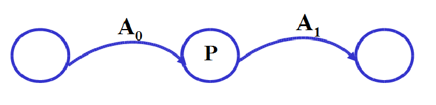
\[A_0\ <\ A_1\]
Cada acción \(A\) que borre a \(P\) tiene que estar antes de \(A_0\) o después de \(A_1\):
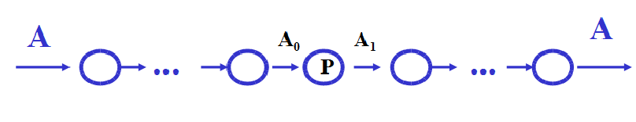
\[A_0\ <\ A_1\ <\ A\] o bien
\[A\ <\ A_0\ <\ A_1\]
Para resolver las amenazas, se añaden restricciones de orden: Nos aseguramos de que la acción que amenaza (s3) no interviene en el enlace causal (de s1 a s2)
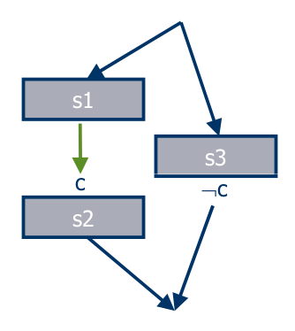
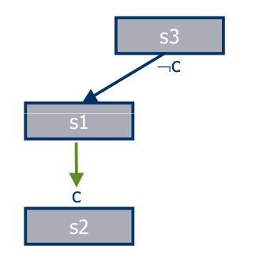
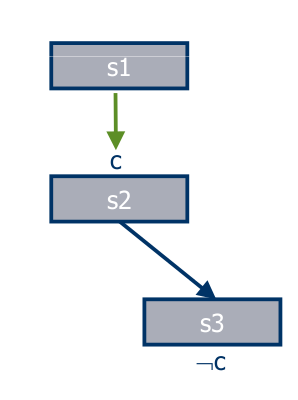
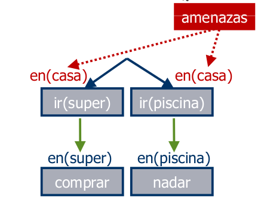
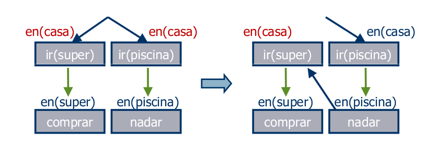
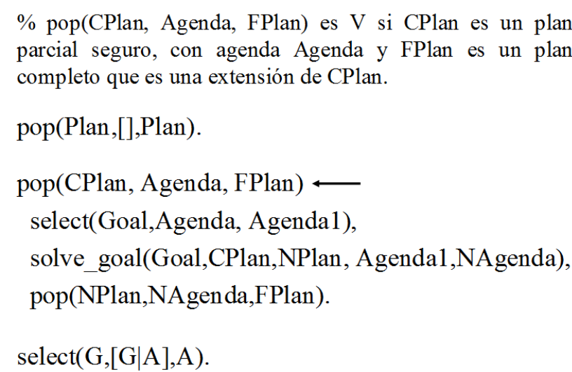
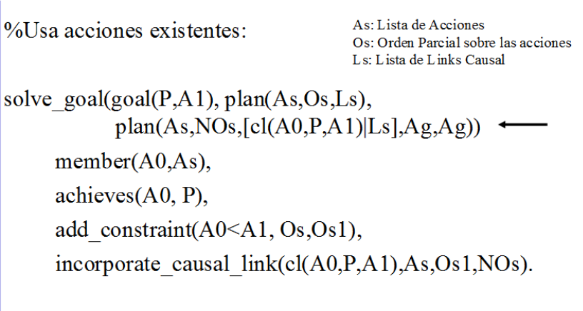
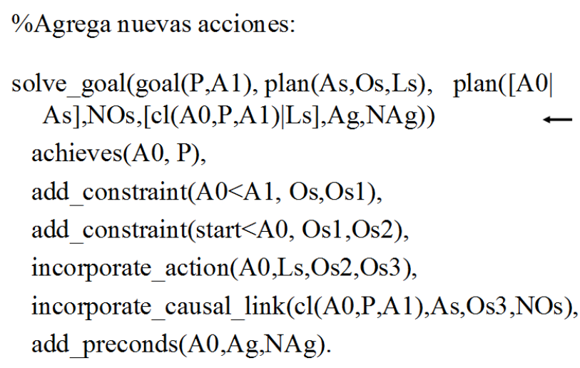
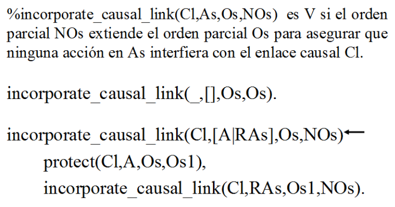
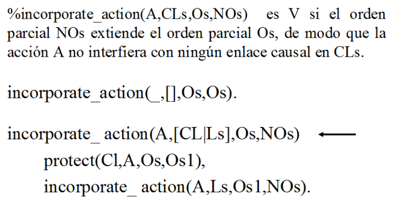
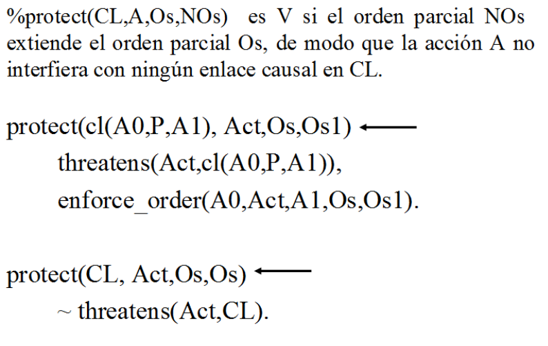
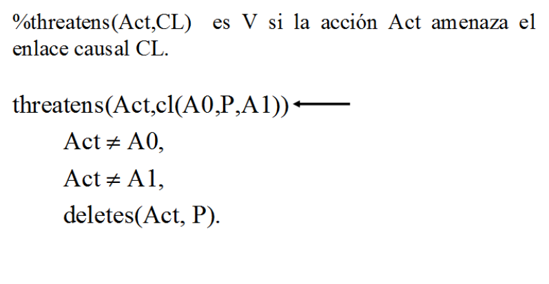
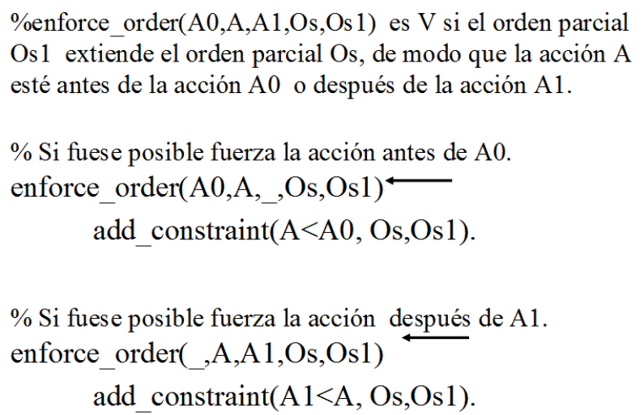